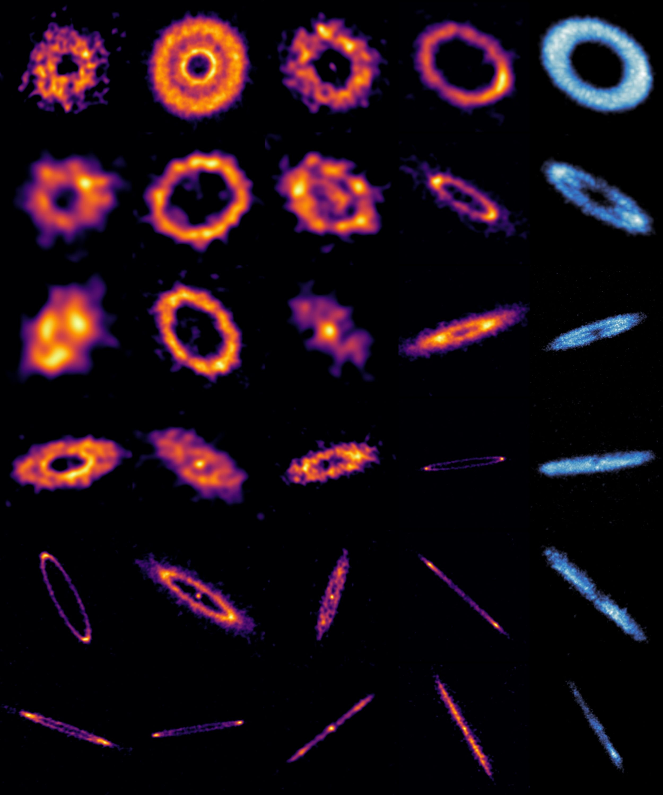

Un equipo internacional de astrónomos ha logrado capturar imágenes de sistemas planetarios en una etapa clave y hasta ahora poco explorada de su evolución: la adolescencia planetaria. El estudio se realizó en el marco del proyecto ARKS (ALMA survey to Resolve exoKuiper belt Substructures), utilizando el Atacama Large Millimeter/submillimeter Array (ALMA).
El proyecto es liderado por el astrónomo chileno Sebastián Marino, investigador externo del Núcleo Milenio YEMS y académico de la Universidad de Exeter, y cuenta con una participación activa de investigadores YEMS de la Universidad de Santiago de Chile (Usach).
Los discos observados por ARKS corresponden a discos de escombros: cinturones de polvo y restos que quedan alrededor de una estrella una vez que sus planetas ya se han formado. Esta etapa es análoga a la adolescencia en la vida de un sistema planetario: más evolucionada que los discos protoplanetarios (donde están los planetas aún en formación), pero aún lejos de una configuración estable (como el Sistema Solar).
“A menudo observamos las ‘fotos de bebé’ de los planetas en formación, pero la adolescencia planetaria era el eslabón perdido”, explica Meredith Hughes, una de las co-investigadoras principales del proyecto.
En nuestro propio Sistema Solar, esta fase está representada por el Cinturón de Kuiper, una región más allá de Neptuno que conserva huellas de colisiones violentas y migraciones planetarias ocurridas hace miles de millones de años.
Los discos de escombros son extremadamente tenues —cientos o miles de veces más débiles que los discos protoplanetarios donde nacen los planetas—, lo que los hace difíciles de observar. Gracias a la resolución sin precedentes de ALMA, el equipo ARKS logró revelar una sorprendente diversidad de estructuras: anillos múltiples, halos extendidos, bordes abruptos, asimetrías, arcos y cúmulos.
“No estamos viendo simples anillos, sino sistemas complejos y dinámicos que revelan una etapa violenta en la historia de los planetas”, señala Sebastián Marino, investigador externo YEMS y líder del programa ARKS.
El proyecto ARKS cuenta con una participación activa de investigadores del Núcleo Milenio YEMS con base en el Centro CIRAS y el Departamento de Física de la Usach:
Esta contribución refuerza el rol de YEMS como un actor relevante en investigaciones de frontera sobre la formación y evolución de sistemas planetarios.
Uno de los desafíos científicos más interesantes del proyecto ARKS fue enfrentar una observación completamente inesperada: uno de los discos de escombros muestra una fuerte asimetría, con una aparente acumulación localizada de rocas y polvo en una región específica del disco, similar a una nube densa de escombros. Este tipo de estructura es particularmente difícil de explicar en esta etapa evolutiva, donde los discos suelen ser simétricos.
Ante este misterio, investigadores YEMS–Usach lideraron uno de los artículos científicos centrales de ARKS, proponiendo una explicación basada en la interacción entre los escombros sólidos y el poco gas remanente aún presente en el disco. El estudio explora la factibilidad de la formación de vórtices de escombros, capaces de concentrar material sólido durante largos períodos.
“Estas observaciones nos obligan a repensar el rol que puede jugar incluso una cantidad mínima de gas en discos que creíamos casi completamente dominados por sólidos. La posibilidad de vórtices de escombros abre un nuevo escenario dinámico para entender estas asimetrías”, explica Sebastián Pérez, académico Usach y director alterno del Núcleo Milenio YEMS.
“Si bien las observaciones de ALMA muestran claramente que existe gas en algunos cinturones tipo Kuiper extrasolares, todavía no sabemos con certeza si la cantidad que detectamos representa todo el gas que realmente está ahí, o si existe una fracción adicional invisible que escapa a nuestras mediciones directas. Al estudiar cuidadosamente bajo cual condiciones se forman las estructuras en las imágenes de ALMA, podemos usar el propio disco como un laboratorio para inferir cuánta materia gaseosa hay realmente y cómo ha evolucionado el sistema.” explica Philipp Weber, investigador YEMS-Usach quien lideró uno de los 10 papers publicados este martes.
Los resultados sugieren que esta etapa adolescente está marcada por migraciones planetarias, colisiones gigantes y una intensa reconfiguración orbital, similar a los eventos que dieron origen a la Luna.
“Estos discos registran una época en que las órbitas planetarias estaban siendo reordenadas de forma caótica”, explica Luca Matrà, co-investigador principal del estudio.
El legado de ARKS será clave para identificar planetas jóvenes aún invisibles y para comprender cómo se construyen y reorganizan las familias planetarias.
“Es como agregar las páginas faltantes al álbum familiar del Sistema Solar”, concluye Hughes.
Más información: https://arkslp.org/
Comunicado de prensa NRAO: ALMA Reveals Teenage Years of New Worlds
Comunicado de prensa ESO: The precious rings of space
{kind=link}
{kind=link}